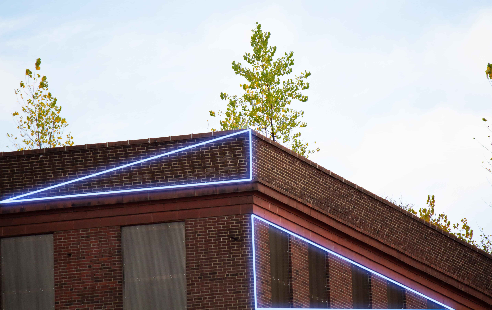

ARTIST STATEMENT:
I have always been fascinated
with shapes and angles inside of
photography. Some of my favorite
work, that started this inspiration, is
from Harry Callahan.
Callahan liked to focus his work
on one subject but used his
surroundings to create the story.
These surrounds would be through
color and the leading lines that were naturally created.
Going beyond photography,
"Angles & Triangles" has a graphical element as well. This was done to enhance some of the triangular shapes that may not have been as prominent to the unknowing eye.
